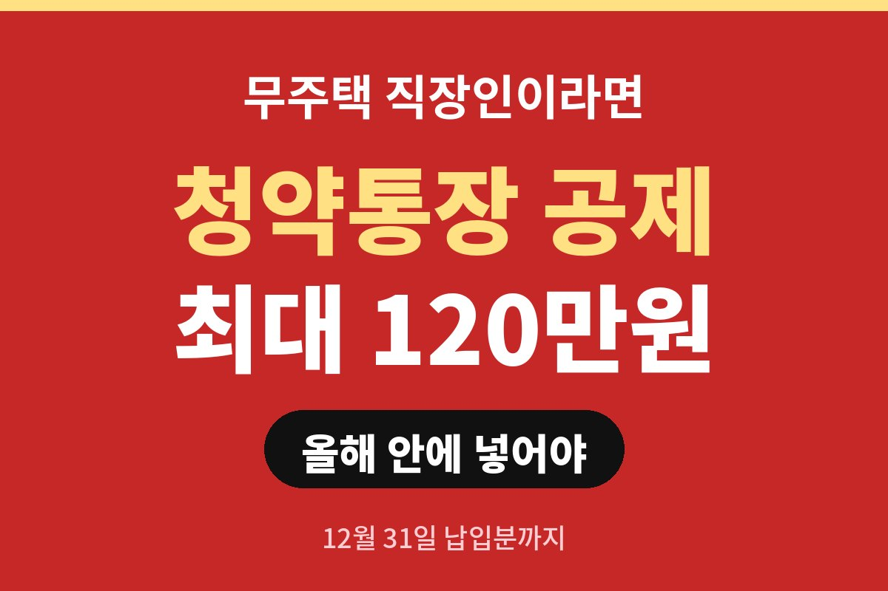
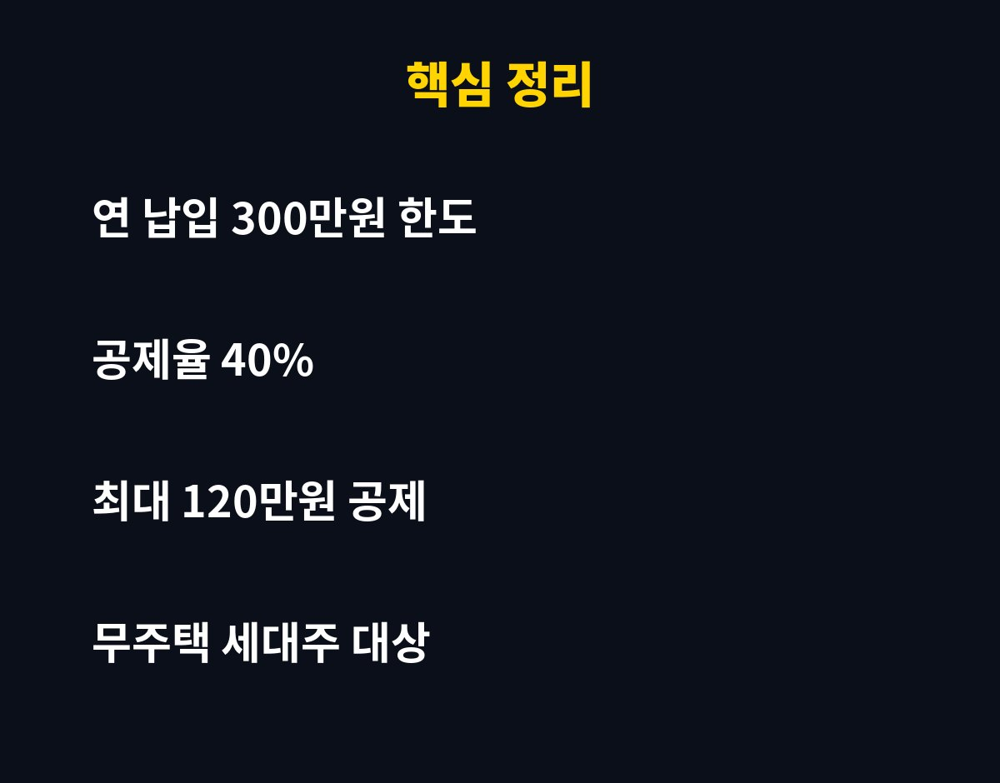
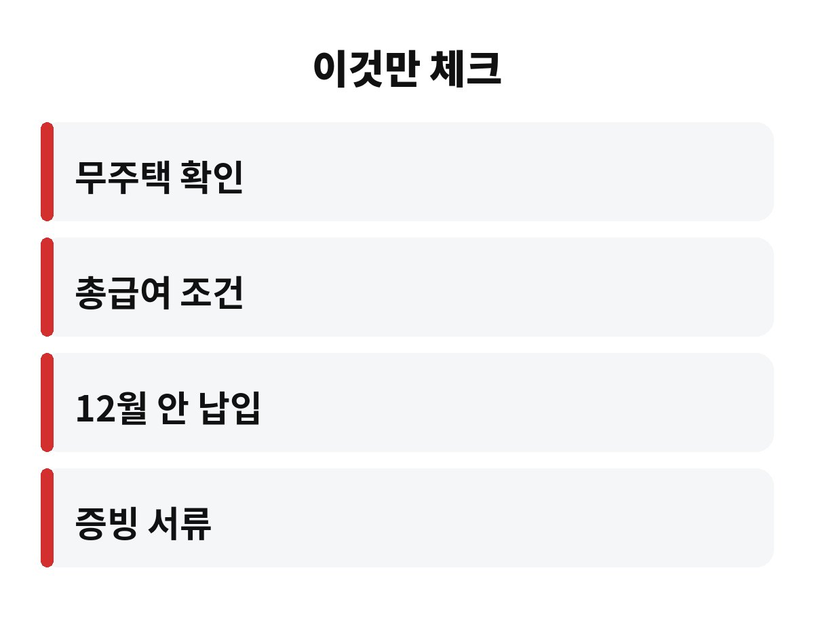

청약통장 소득공제는 연 납입액 300만원 한도에서 40%, 최대 120만원까지 소득에서 빼주는 제도입니다. 무주택 직장인이라면 올해 납입분이 언제까지 인정되는지, 나는 대상인지 궁금하시죠?
핵심은 납입액의 40%를 소득에서 빼준다는 점입니다. 연간 300만원까지 넣었다면 120만원이 과세 대상 소득에서 빠집니다. 월 25만원씩 12개월 넣으면 딱 300만원이 되니까 계산이 쉽죠.
주의할 점은 이게 120만원을 현금으로 돌려받는다는 뜻이 아니라는 거예요. 줄어든 소득에 붙는 세율만큼 세금이 줄어듭니다. 그래서 내 세율 구간에 따라 체감 금액은 달라집니다.
기본 조건은 세 가지로 알려져 있습니다. 근로소득이 있는 무주택 세대주여야 하고, 총급여가 일정 기준 이하여야 하고, 주택청약종합저축에 가입돼 있어야 합니다. 총급여 기준과 세대주 요건은 해마다 손볼 수 있어서, 연말정산 전에 국세청 안내에서 올해 기준을 꼭 다시 보세요.
무주택 세대원이라면 어떨까요? 요건이 까다로워서 본인이 해당되는지 미리 확인해 두는 게 좋아요. 나중에 알면 이미 늦거든요.
공제는 그해 12월 31일까지 실제로 납입한 금액이 기준입니다. 내년 1월에 몰아서 넣는 건 올해 공제에 못 들어가요. 그래서 이맘때 월납으로만 넣어 왔다면 남은 한도를 따져 보는 게 중요합니다.
예를 들어 올해 월 10만원씩만 넣었다면 지금까지 납입액이 얼마인지 보고, 한도 300만원까지 남은 금액을 연내에 채울지 정하면 됩니다. 다만 무리하게 넣었다가 생활비가 빠듯해지면 본말전도죠.
은행에서 발급하는 청약저축 납입 증명서와 무주택 확인서가 필요합니다. 은행마다 발급 방식이 달라서 연말정산 자료 제출 기한 전에 미리 받아 두면 마음이 편해요.
| 항목 | 내용 |
| 연 납입 한도 | 300만원 |
| 공제율 | 40% |
| 최대 공제액 | 120만원 |
| 납입 기준일 | 12월 31일 |

청약통장은 공제만 보고 넣는 상품은 아니에요. 내 집 마련 계획이 있어야 의미가 있죠. 공제는 덤이라고 생각하고, 청약 가점과 납입 인정 금액까지 같이 보는 걸 추천합니다.

여러분은 올해 청약통장에 얼마나 넣으셨나요? 댓글로 남겨 주시면 같이 계산해 봐요. 도움이 됐다면 구독 눌러 주세요!
※ 본 글은 일반 정보이며 투자 권유가 아닙니다. 공제 요건은 해마다 바뀔 수 있으니 국세청·은행 안내를 확인하세요.